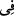
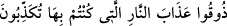
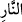
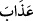
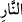

“Yoldan çıkanlar” inkâr ve isyânı tercih etmek sûretiyle îmân ve tâatten çıkanlar “ise,
onların varacakları yer” yâni sığınakları ve konakları “ateştir.” Oysa mü’minlerin
varıp kalacakları yer cennet konaklarıdır.
“Oradan her çıkmak istediklerinde geri çevrilirler” Bu, onların cehennemde ebedî
olarak kalmalarından ibarettir. Çünkü hakîkatte ne çıkış, ne de geri çevrilme vardır.
Nitekim başka bir âyette: “…Cehennemin ateşi dindikçe, onlara çılgın ateşi
artırırız” (el-İsrâ, 17/97) buyrulmuştur. Cehennem ateşi ise dinmez. Yâni cehennem
ehlinden biri ne zaman ateş dindi, diyecek olsa, hemen ateş artırılır.
Rivâyet edilir ki cehennem ateşinin alevleri cehennemliklere vurur ve onlar
cehennemin üst tabakalarına yükselirler. Nihâyet cehennemin kapısına yaklaştıkları ve
cehennemden çıkmak istedikleri zaman ateşin alevi onlara vurur veya cehennem
zebânîleri onlara ateşten gürzlerle vururlar. Böylece onlar yetmiş yıl cehennemin dibine
doğru yuvarlanırlar. Ebedî olarak onlara böyle yapılır.
Âyetteki “” harfi, onların cehennemde ebedî olarak kalacaklarına delâlet etmek
içindir. Cehennemliklerin geri çevrilmesi ancak cehennemin bazı tabakalarından
bazısınadır.
“Ve” aşağılamak, azaplarını şiddetlendirmek ve öfkelerini artırmak üzere
“kendilerine:” Dünyâda iken sürekli olarak; ne cennet var, ne de cehennem. “Yalandır
deyip durduğunuz cehennem azabını tadın!” denir.”
Burhânü’l-Kur’ân’da der ki: “Sebe’ sûresinde “ (es-
Sebe’, 34/42) buyrulmuştur. Bu sûrede ise “ kelimesi, daha önce zikredildiği için
kinâye yerinde gelmiştir. Kinâyeler ise mevsûf olmaz. Bu yüzden “ kelimesi
mevsûf olmuştur. Sebe’ sûresinde ise “ kelimesi, daha önce zikredilmemiştir. Onun
için “ kelimesinin mevsuf olması daha güzel olmuştur. Bu inceliği unutma.”
et-Te’vîlâtü’n-Necmiyye’de şöyle denilmiştir: “Yoldan çıkanlar” doğru yoldan çıkıp
uzaklık ve uzaklaştırılma kuyusuna düşenler “ise, onların varacakları yer ateştir.
Oradan her çıkmak istediklerinde geri çevrilirler” Çünkü onlar dünyâda iken bu
fâsıklık sıfatında yaşadılar, bu sıfatta öldüler ve bu sıfat üzere haşrolunacaklardır.
Çünkü Hakk’a çağıran dâvetçiler, dünyâda iken onlara şerîat ipiyle ve tarîkat âdâbına
riâyetle tabîatın en aşağısından çıkmalarını nasihat ediyordu. Rûhânî şevk onları aslî-
ulvî vatana yönelmeye sevk etti. Şehvetlere dâir derekelerden/aşağı mertebelerden
çıkmaya azmettiklerinde nefsânî-hayvânî-süflî/aşağılık tabîat onları yakaladı ve onları
tekrar tabîatın en aşağısına geri çevirdi. “Ve” kıyâmet gününde de “kendilerine:
“Yalandır deyip durduğunuz cehennem azabını tadın!” denir.” Çünkü siz, her ne kadar
dünyâda iken de azab edilmiş olsanız da uhrevî hislerinizin eksikliği sebebiyle azâbın
farkında değildiniz. Eğer o azabın acısını hissetmiş olsaydınız, şu cehennem azabını
zorunlu kılan amellere son verirdiniz. Nitekim dünyâda iken ateşin acısını tattığınız için
ondan çok sakınır/uzak durursunuz.”
Cehennem ateşinde yanmak, kâfir ve fâsıklar içindir. Mü’min ve mutî‘/itâatkar